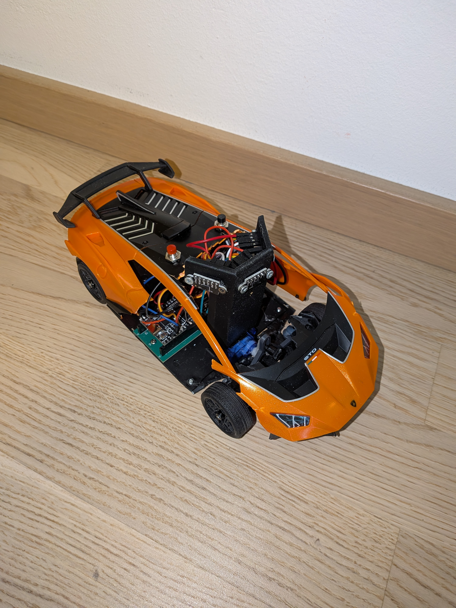
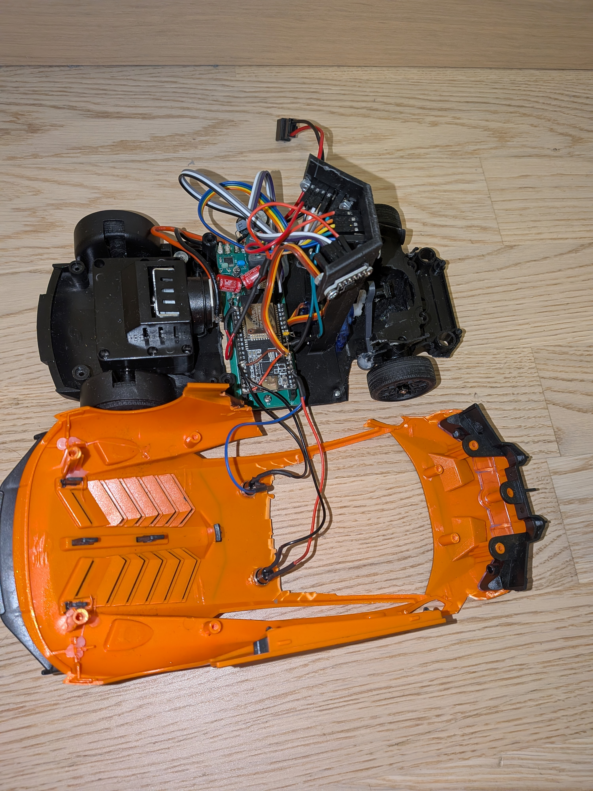
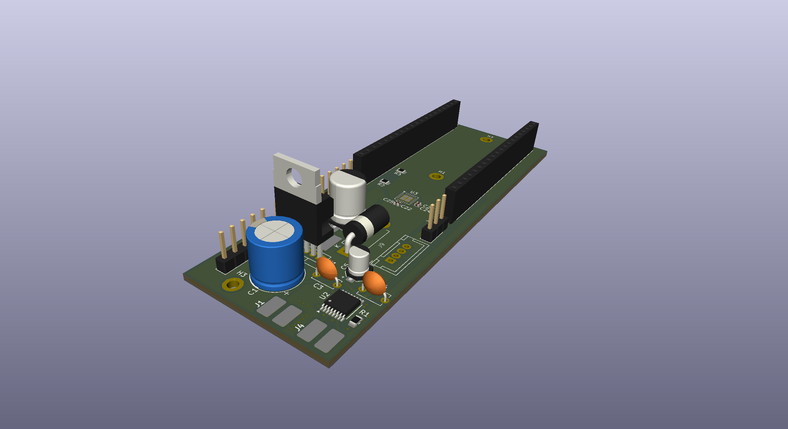
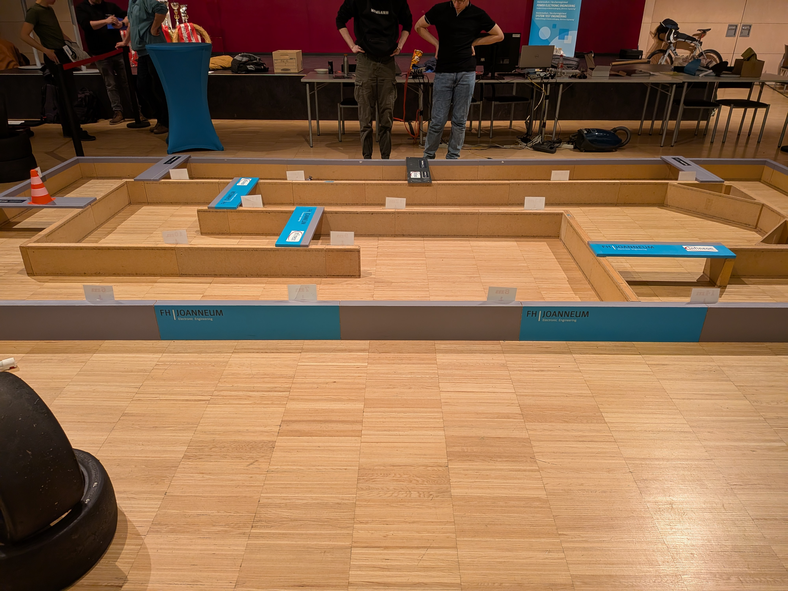

Crazy Car: Autonomous AI/RL RC Car
Our first major robotics experiment built from a €30 Amazon RC car. Trained a neural policy in Unity ML-Agents to directly control motor PWM and steering, serving as an invaluable hands-on learning testbed.
Project Timeline & Milestones
As project lead, I spent hundreds of hours coding and training neural networks in Unity ML-Agents. Used progressive learning curriculum—starting on simple ovals before advancing to complex track layouts. Simultaneously modified the €30 Amazon RC car chassis and designed our custom PCB.
Final vehicle assembly was delayed, completing only days before the Graz competition. Bench testing revealed critical hardware oversights: IMU PCB traces were accidentally missing from the printed circuit board, and high motor current induced voltage sags that reset sensor readings.
We traveled to the Graz competition determined to troubleshoot on-site. We spent 2 intense days debugging power lines and sensor noise, but couldn't get the vehicle to drive reliably. This failure became our strongest catalyst—prompting us to start our 2027 Ground Effect successor 8 months early with strict git version control, MPC control algorithms, and proper power isolation.
1. Direct End-to-End AI Control Experiment
Unlike conventional autonomous vehicles that use a cascaded controller (such as a PID loop for motor speed and steering angle), our model directly output motor duty cycle percentage and servo angle from raw sensor inputs (velocity, IMU acceleration, and 3 Time-of-Flight distance sensors). While this worked brilliantly in the Unity physics simulator, real-world motor latency and sensor noise created unbuffered instability.
2. PCB Hardware Flaws & Electrical Noise
During custom PCB layout, the trace routing connecting the IMU sensor was inadvertently omitted. In addition, powering the high-draw drive motor from the shared power rail caused severe electromagnetic interference (EMI) and voltage sags under acceleration, corrupting ToF sensor readings.
Honest Reflection on Version Control & Timing
Looking back, not utilizing Git version control was a significant mistake that hindered code tracking during late-night debugging. Furthermore, finishing hardware assembly just days before competition left zero buffer for real-world calibration. We embraced these lessons immediately: all subsequent projects enforce Git source control, modular testing, and decoupled power distribution.
Project Media, Code & CAD Assets



